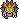

岩石碎片Rock Chip

道具
岩石或地面寶可夢身上的石片。可以賣給商店。
效果
從背包使用：「貴重物品。可以高價賣給友好商店。」
取得方式
任何友好商店都不販售。賣給友好商店可得 6
野生寶可夢掉落：
| 寶可夢 | 機率 | 數量 |
|---|---|---|
 穿山鼠 穿山鼠 | 10% | 1 |
 穿山王 | 10% | 1 |
 地鼠 地鼠 | 10% | 1 |
 三地鼠 三地鼠 | 10% | 1 |
 小拳石 小拳石 | 10% | 1 |
 隆隆石 隆隆石 | 10% | 1 |
 隆隆岩 隆隆岩 | 10% | 1 |
 大岩蛇 大岩蛇 | 10% | 1 |
| 卡拉卡拉 | 10% | 1 |
 嘎啦嘎啦 嘎啦嘎啦 | 10% | 1 |
 獨角犀牛 獨角犀牛 | 10% | 1 |
 鑽角犀獸 鑽角犀獸 | 10% | 1 |
 菊石獸 菊石獸 | 10% | 1 |
 多刺菊石獸 多刺菊石獸 | 10% | 1 |
 化石盔 化石盔 | 10% | 1 |
 鐮刀盔 鐮刀盔 | 10% | 1 |
 化石翼龍 化石翼龍 | 10% | 1 |
 樹才怪 樹才怪 | 10% | 1 |
 天蠍 天蠍 | 10% | 1 |
 大鋼蛇 大鋼蛇 | 10% | 1 |
 太陽珊瑚 太陽珊瑚 | 10% | 1 |
 盔甲鳥 盔甲鳥 | 10% | 1 |
 小小象 小小象 | 10% | 1 |
 頓甲 頓甲 | 10% | 1 |
| 幼基拉斯 | 10% | 1 |
 沙基拉斯 沙基拉斯 | 10% | 1 |
 班基拉斯 班基拉斯 | 10% | 1 |
 朝北鼻 朝北鼻 | 10% | 1 |
 大嘴娃 大嘴娃 | 10% | 1 |
 可可多拉 可可多拉 | 10% | 1 |
 可多拉 可多拉 | 10% | 1 |
 波士可多拉 波士可多拉 | 10% | 1 |
 大顎蟻 大顎蟻 | 10% | 1 |
 超音波幼蟲 超音波幼蟲 | 10% | 1 |
| 沙漠蜻蜓 | 10% | 1 |
 月石 月石 | 10% | 1 |
 太陽岩 太陽岩 | 10% | 1 |
 天秤偶 天秤偶 | 10% | 1 |
 念力土偶 念力土偶 | 10% | 1 |
 觸手百合 觸手百合 | 10% | 1 |
 搖籃百合 搖籃百合 | 10% | 1 |
 太古羽蟲 太古羽蟲 | 10% | 1 |
 太古盔甲 太古盔甲 | 10% | 1 |
 鐵啞鈴 鐵啞鈴 | 10% | 1 |
 金屬怪 金屬怪 | 10% | 1 |
 巨金怪 巨金怪 | 10% | 1 |
 頭蓋龍 頭蓋龍 | 10% | 1 |
 戰槌龍 戰槌龍 | 10% | 1 |
 盾甲龍 盾甲龍 | 10% | 1 |
 護城龍 護城龍 | 10% | 1 |
 銅鏡怪 銅鏡怪 | 10% | 1 |
 青銅鐘 青銅鐘 | 10% | 1 |
 盆才怪 盆才怪 | 10% | 1 |
 沙河馬 沙河馬 | 10% | 1 |
 河馬獸 河馬獸 | 10% | 1 |
 超甲狂犀 超甲狂犀 | 10% | 1 |
 天蠍王 天蠍王 | 10% | 1 |
 大朝北鼻 大朝北鼻 | 10% | 1 |